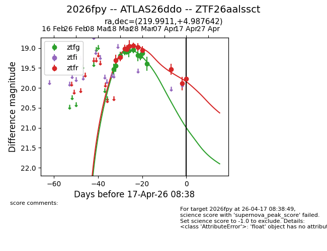
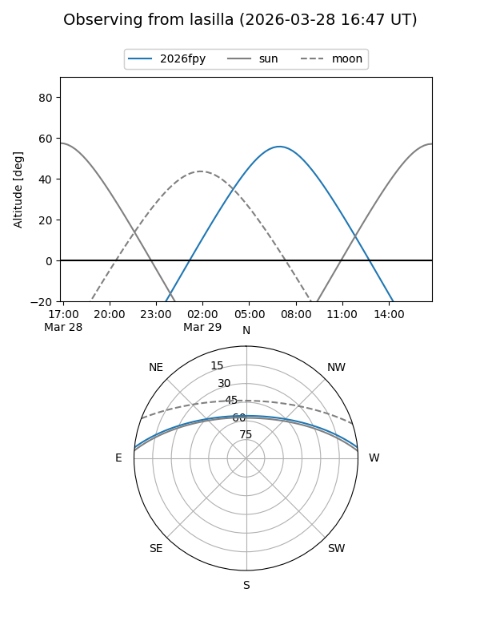
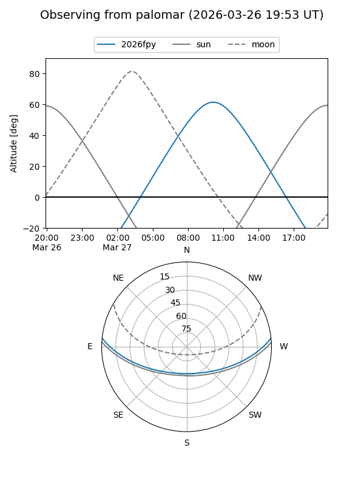
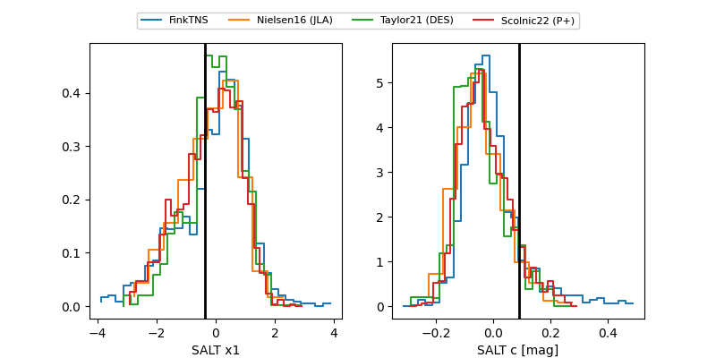

2026fpy
Target 2026fpy at 2026-04-17 08:44
Aliases and brokers:
FINK: link
Lasair: link
ALeRCE: link
TNS: link
YSE: link
alt names
ZTF26aalssct (ztf,fink_ztf)
2026fpy (tns,yse)
ATLAS26ddo (atlas)
Coordinates:
equatorial (ra, dec) = 219.9911,+4.98764
equatorial (HMS+DMS) = 14:39:57.87,+04:59:15.51
galactic (l, b) = (357.1953,+55.96535)
Flags:
Photometry:
last ztfg=19.39, ztfr=19.78
11 ztfg, 11 ztfr detections
Lightcurve

Visibility


Additional plots
